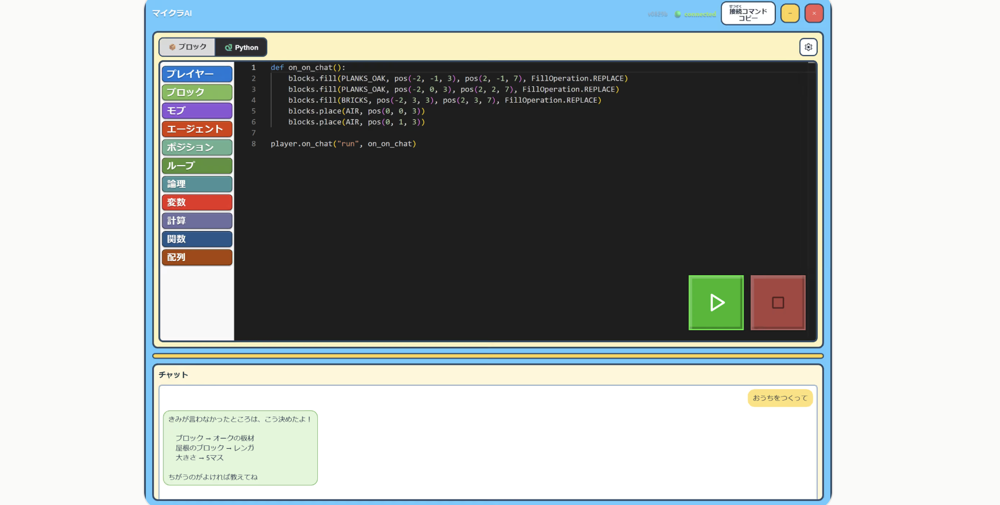

Courses
コース案内

ブロックコーディングコース
ブロックコーディングコースでは、主にマウスをつかってプログラミングの基礎を学びます。小学1年生から受講可能です。個人差はありますが、1~2年ほどで修了となります。

Pythonコース
Pythonコースでは、マインクラフトを使って、実際のプログラミング言語を学習します。個人差はありますが、1~2年ほどで修了となります。

AIコース
AIコースでは、マインクラフトの中で日本語でAIに指示を出しながらプログラミングを学びます。自分でコードを書く学習はそのままに、AIを使いこなす力をプラスします。
Flow
指導の流れ
-
01
導入・前回の復習
授業のはじめに、前回学んだ内容を講師と一緒に振り返ります。少人数制のため、お休みした回があっても一人ひとりの進み具合に合わせて再開でき、授業に遅れをとる心配はありません。
-
02
ミッションに挑戦
本格的なストーリー設定のある教材で、マインクラフトの世界のミッションにゲーム感覚で挑戦します。つまずいたところは講師が分かるまで何度でもサポートし、楽しみながら論理的思考力や問題解決能力を育みます。パソコンやマインクラフトが初めてのお子様にも、一から丁寧に指導します。
-
03
復習テスト
単元の区切りでペーパーテストを行い、お子様の理解度を確認します。理解が不十分なところは必要に応じて再度指導し、一人ひとりの理解度に合わせて次のステップへ進みます。
Level
レベルの目安
| コース | 対象 | 内容 | 修了の目安 |
|---|---|---|---|
| ブロックコーディングコース | 小学1年生～中学生 | 主にマウスをつかってプログラミングの基礎を学びます | 1~2年ほど（個人差あり） |
| Pythonコース | ブロックコーディングコース修了生 | マインクラフトを使って、実際のプログラミング言語を学習します | 1~2年ほど（個人差あり） |
| AIコース | 小学生～高校生 | 日本語でAIに指示を出しながら、Pythonでのプログラミングを学習します | 要確認 |
← 横にスクロールできます
まずは無料体験へ
体験会は、あくまでも雰囲気を知っていただくためのものです。「参加=入会が必須」というわけではございませんので、お気軽にお試しください。